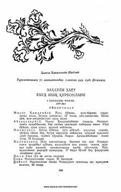

ZHTurkiston hayotidan olingan to'rt pardali fojiali drama.
Mazkur asar Turkistonning o'z maishatidan olingan fojiali voqealarga bag'ishlangan to'rt pardali dramadir. Unda jamiyatdagi eskicha qarashlar va yoshlarning muhabbat yo'lidagi fojiasi ochib berilgan. Asar muallifi Hamza Hakimzoda Niyoziy o'sha davr hayotidagi illatlar va ijtimoiy tengsizlikni keskin tanqid qiladi.